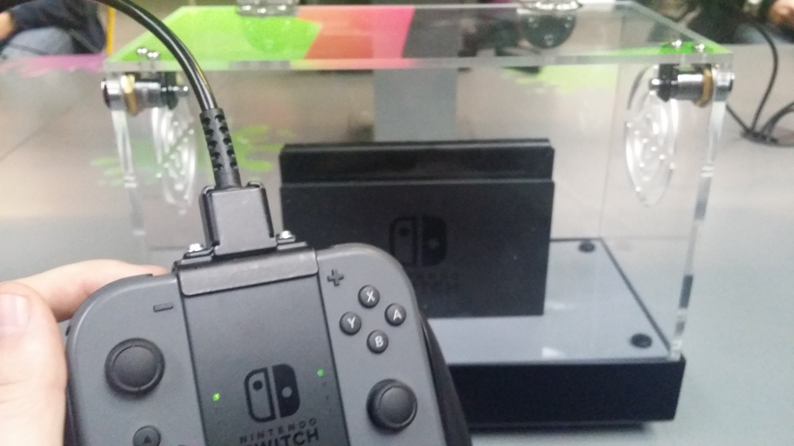
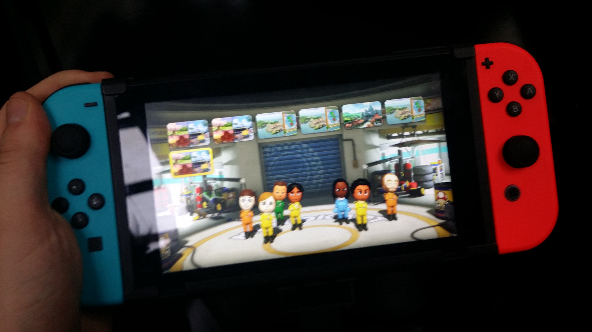

Hands on with the Nintendo Switch
I recently had the opertunity to play the new Nintendo Switch two weeks before launch. I got some hands on time with Zelda, Mario Kart and Arms. In the article I will be looking at how the console handles, the different modes that it has and wheather I will be buying one come the 3rd of march.
On the 10th of feburary I had the chance to attend a free event hosted in Birmingham where I got the chance to play the new Nintendo Switch, Nintendo's new home console that can also act as a portable console.When we arrivied we were greated with a queue and everyone there seemed enthusiastic to get in and play the console. after about twenty miniutes the doors finally opened.The first game that we got to play was ‘Splatoon’, a competitive shooter where the objective is to cover the map with as much of your team’s paint as possible, while eliminating the other team and preventing them from spreading their paint. We got to use the pro controller, which is more like a traditional controller. The game was unique compared to other shooters because you use the motion sensors in the controller to aim. This provided a challenge and unfortunately I didn’t quite perform as expected and ended up near the bottom of the score board.
 We next made our way to the Zelda stand, arguably the system’s most anticipated release. Here we got to start from the begging of the game and got to explore some of the game’s open world. What was interesting was that we could get to use the console’s portable mode and this was very impressive. The transition was seamless and I have never seen a game run so well on a tablet. There was almost no delay between the transitions, after seeing this game I saw the potential as a portable console too.
After the Breath of The Wild we got a chance to play 1, 2, Switch, a collection of mini games. The first game we played was a cowboy style showdown where you must draw your controller and fire before your opponents. I felt that this was a very entertaining party game but not something that I could see myself coming back too. Similarly, the second game was a race to milk a cow as fast of possible. While this game wasn’t as fun to play as the quickdraw it was entertaining and almost impossible to keep a straight face while playing!
We then moved onto Snipperclips, a co-operative puzzle game where you must cut shapes out of each other to complete tasks. This was played exclusively on the Switch’s tablet and each player used a JoyCon controller to control their character. I felt the game was very entertaining and liked the fact that it had to be played on one screen to make you work together. I think that this could be a good game to have for the console since it could be played anywhere and is very accessible. I am a big fan of co-opertive games and this was right up my street. I imagine it could get frustrating but not becuase iof bad design, just when your partner won't do what you tell them!
 After finishing a quick round on Snipperclips we got a chance to play Mario Kart on the tablet, not much to say here, Mario Kart is always fun and it looked great on the tablet. The final game we played was Arms, a fighting game where you use the detached JoyCon controllers to swing and fight the other player. It was reminiscent of the original Wii sports boxing but had a lot more depth and character. It uses characters that have special abilities, making each fighter unique. The motion controls were a lot more accurate to, allowing you to flick your wrist to swing and attack from the sides. This is a game that I enjoyed a lot, not just becuase I won every round! It has the potenial for a wide veriety of abilites and playstyles. The only negavtive thing about it was that I felt that it was to easy to spam 'Ultimate attacks' which are attacks that deal a lot of damage and can't be escaped once you've been caught in them.  Over the event I got to experience the different set ups that the console offers. I very much enjoyed my time with the console and getting to use it hands on opened my mind to it, where before I tended to avoid Nintendo consoles. Right now I have two worries about the console; the library and the power of the console. I do feel optimistic about it expanding I can't but think back to the Wii U which after a year of it's release there was hardly any third party support. Nintendo seem to have pushed the support at it's reveal so hopefully there will be more support but only time will tell. Secondly the power of the console. It roughly works out to be a bit more powerful than an Xbox 360 but no where near the Xbox One. This is worrying considering that Sony and Microsoft have had to revise thier current gen offerings to be more powerful. This comes back to the thrid party games, why would I choose to purchase a infirior version on the switch? Nintendo have never been ones to puch games to graphical limits of the time, prefering to offer unique and fun gameplay instead. I feel that this will be a more casual console in comparison to the Xbox or PS4. I don’t think that I will be purchasing one on release but it is on my radar now and perhaps in a year when the library is larger I could see myself picking one up!
Over the event I got to experience the different set ups that the console offers. I very much enjoyed my time with the console and getting to use it hands on opened my mind to it, where before I tended to avoid Nintendo consoles. Right now I have two worries about the console; the library and the power of the console. I do feel optimistic about it expanding I can't but think back to the Wii U which after a year of it's release there was hardly any third party support. Nintendo seem to have pushed the support at it's reveal so hopefully there will be more support but only time will tell. Secondly the power of the console. It roughly works out to be a bit more powerful than an Xbox 360 but no where near the Xbox One. This is worrying considering that Sony and Microsoft have had to revise thier current gen offerings to be more powerful. This comes back to the thrid party games, why would I choose to purchase a infirior version on the switch? Nintendo have never been ones to puch games to graphical limits of the time, prefering to offer unique and fun gameplay instead. I feel that this will be a more casual console in comparison to the Xbox or PS4. I don’t think that I will be purchasing one on release but it is on my radar now and perhaps in a year when the library is larger I could see myself picking one up!